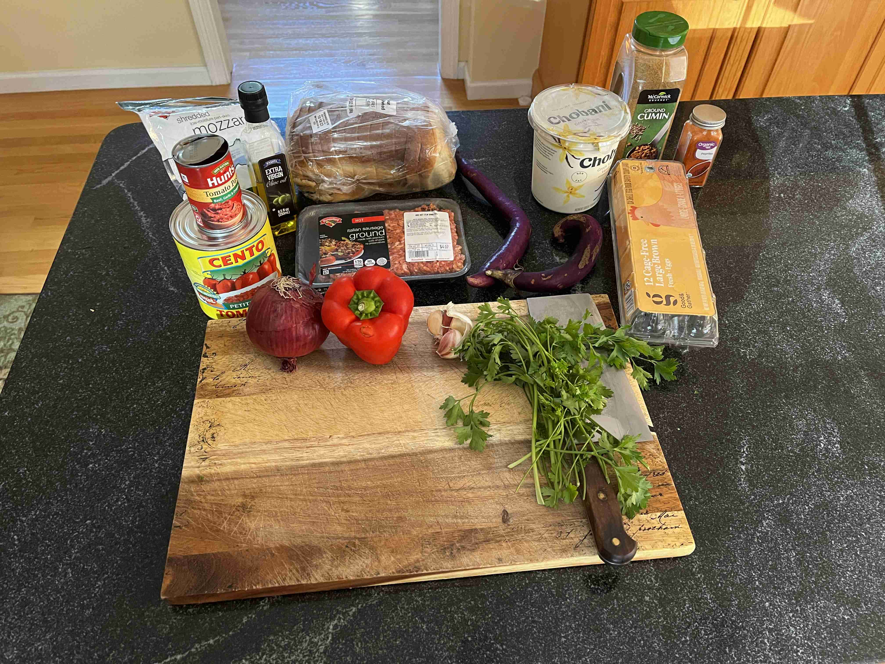
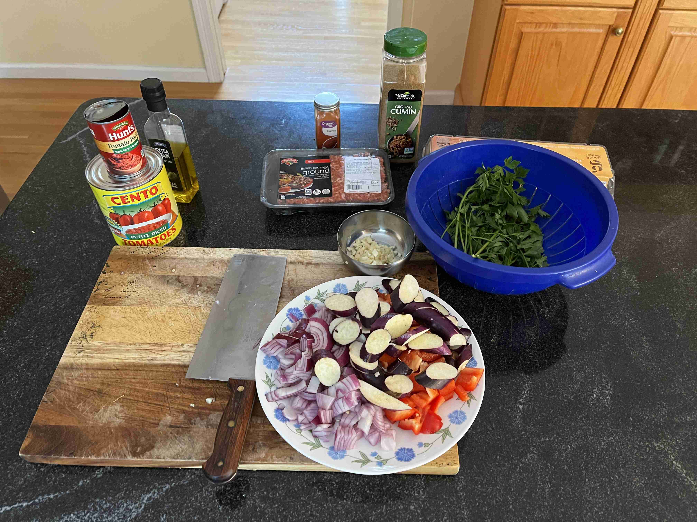
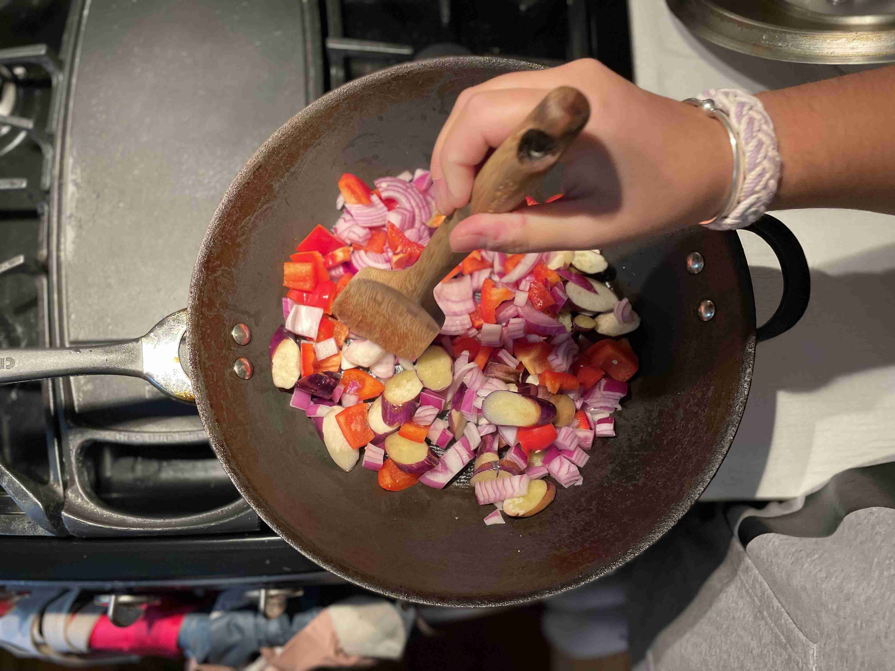
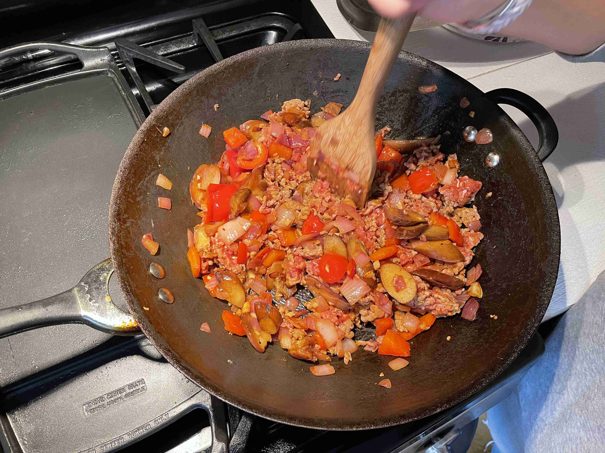
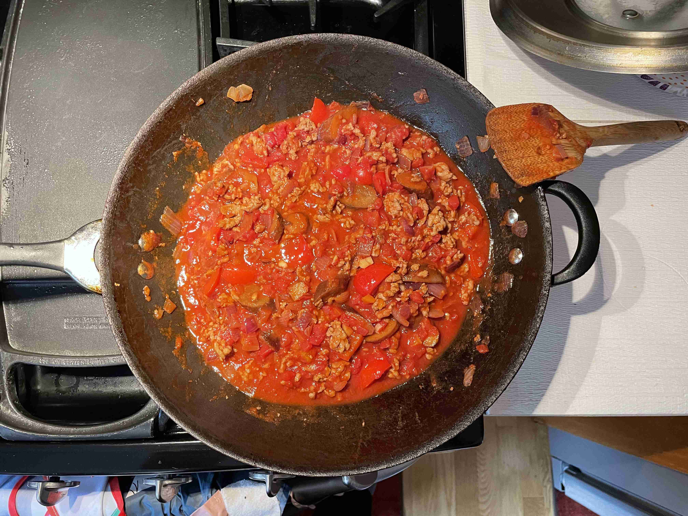
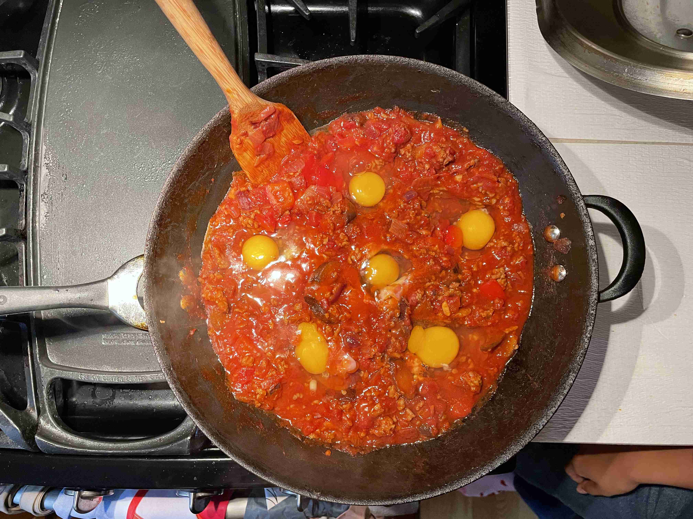
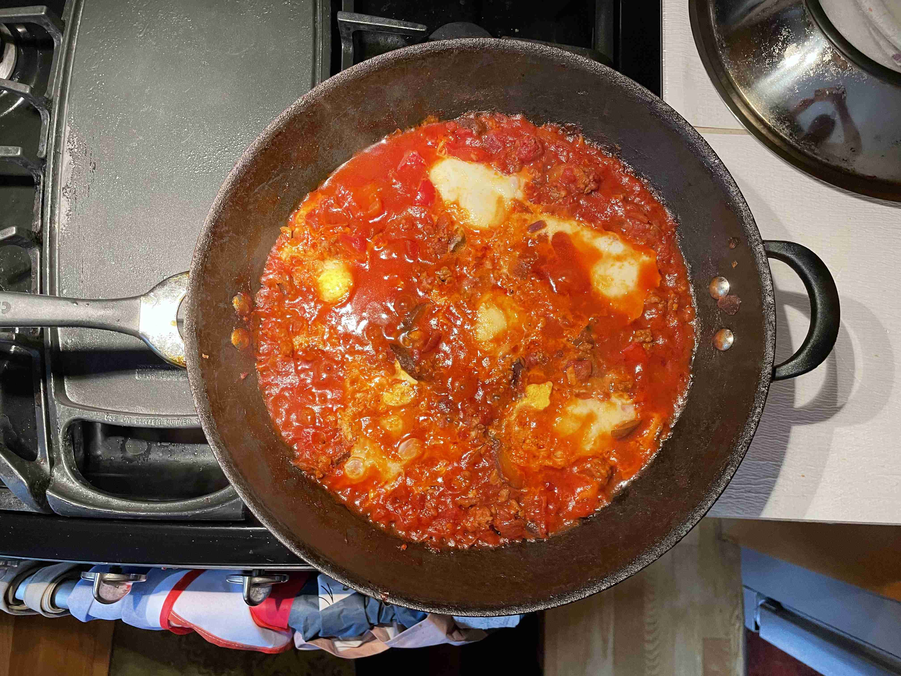

Shakshuka (Tunisia)★
-
 6 servings
6 servings
-
 1.5
hours
1.5
hours
-
 Lisa Bryan
Lisa Bryan
-
 Meat
Meat
-
 Spicy
Spicy
-
 Umami
Umami
Cooked on October 16, 2023.
My sixteenth recipe! Shakshuka is a delicious tomato-based breakfast dish with eggs poached in the sauce. It is a popular dish in the Middle East and North Africa, and is usually served with bread or some other type of grain. The dish is very easy to make and is very customizable with spices and herbs to make it more flavorful.
Rating 8.5/10, it was a delicious brunch dish with a good amount of vegetables. The Italian sausage was a great add and provided a good kick along with the very flavorful sauce. The eggs were a bit overcooked and the dish was very filling.
Special equipment: Large skillet (or wok)
Cooking
2 tbspolive oil1 lbground italian sausage1medium onion (diced)1red bell pepper (diced)2eggplants (sliced)4 clovesgarlic (minced)2 tsppaprika1 tspcumin28 oz canwhole peeled tomatoes6large eggs (or as many can fit)1 bunchparsley (chopped)2 tspsalt2 tsppepper1/4 cupfeta cheese (crumbled)


Heat olive oil in large skillet over medium heat. Add bell pepper, onion, and eggplant and cook for 5-6 minutes. Sprinkle with salt.

Add ground italian sausage and garlic and cook until meat is browned.

Add paprika, cumin, salt and pepper and cook for 1 minute.
Pour in can of tomatoes and break with spatula. Season wtih salt and pepper and bring to a simmer.

Make wells with a spatula. Crack eggs into wells and cover with lid. Cook for 5-8 minutes, or until eggs are cooked to your liking.


Garnish with parsley and serve while hot with toasted bread (pita/sourdough), pasta, or some other grain for a hearty brunch!
Thanks to my friends for cooking this with me!
Reflection: Honestly, I don’t know what coul have been improved other than adding even more vegetable combinations. It was very visually appealing but I’m just not a huge fan of eating a very tomato-based dish. I think I would have enjoyed it more if I had some more bread (maybe naan would work great) to dip in. I think the eggs were a bit overcooked and I should have taken them out earlier. Definitely a great pasta sauce recipe as well.